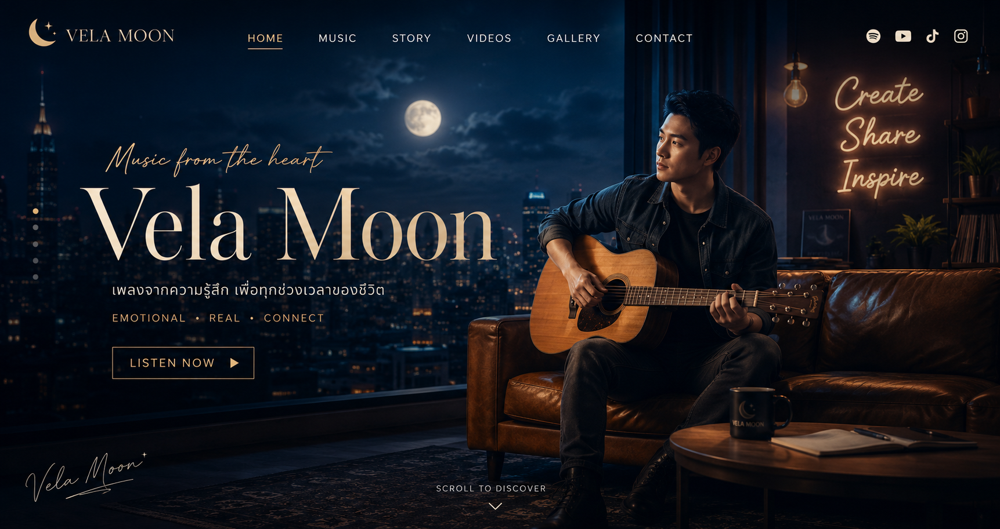

EP.1 เพลงเรอ
เรื่องราวโคตรธรรมดาในออฟฟิศ ที่ตอนอยู่ในเหตุการณ์แม่งไม่ขำเลย แต่พอเลิกงานแล้วเอามาเล่า ดันฮาจนอยากเปิดเบียร์
จักรวาลเรื่องเล่าหลังเลิกงาน
พอดแคสต์จาก VelaLab สำหรับคนที่เหนื่อยกับงาน เหนื่อยกับคน เหนื่อยกับชีวิต และมีหลายเรื่องที่พูดในออฟฟิศไม่ได้ แต่เอามาระบายหลังเลิกงานได้

เร็วๆ นี้
EP.1 เพลงเรอ
เรื่องราวโคตรธรรมดาในออฟฟิศ ที่ตอนอยู่ในเหตุการณ์แม่งไม่ขำเลย แต่พอเลิกงานแล้วเอามาเล่า ดันฮาจนอยากเปิดเบียร์
รูปแบบรายการ
เรื่องงาน ความเหนื่อย ความกดดัน และความรู้สึกที่คนทำงานไม่ค่อยพูด ถูกเล่าเป็นพอดแคสต์หลังเลิกงานแบบแห้งๆ ดาร์กนิดๆ และจริงเกินไปหน่อย
เล่าเรื่องด้วยเสียง AI แบบดราม่าเหมือนเพื่อนนั่งบ่นตอนตีสอง
เรื่องจริงของคนทำงาน ความเหนื่อย ความกดดัน และความรู้สึกที่ไม่มีใครพูด
เรื่องตลกร้ายในออฟฟิศที่คนทำงานเข้าใจกันดี
ตัดช่วงพีคไปทำ TikTok, Reels และ YouTube Shorts
Shorts System
ทุกตอนของ Vela After Work ถูกออกแบบให้สามารถตัดเป็นคลิปสั้นได้ทันที ทั้งช่วงฮา ช่วงดาร์ก ช่วงบ่น และประโยคที่คนทำงานฟังแล้วต้องหยุดเลื่อนจอ